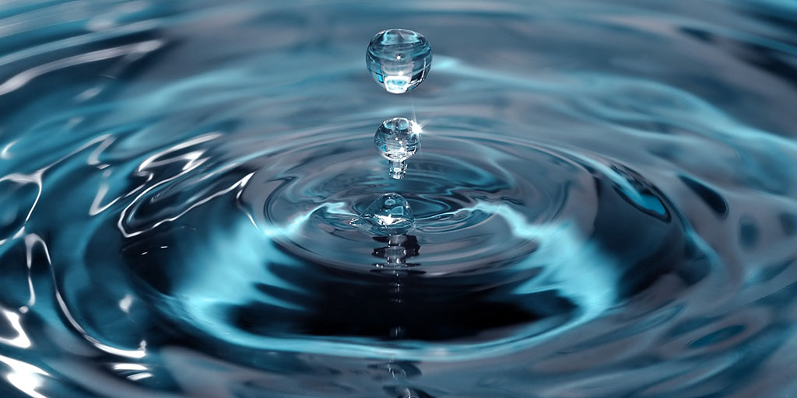

Water
Water is the most important chemical in the world because it is what allows for life to exist. Water dissolves most substances which is important because this allows new compounds to form, since the dissolved substances can move freely and interact with other substances. Water on earth can be found in solid (ice), liquid (water), and gas (water vapor). Water at 1 atm boils at 100 °C and freezes at 0 °C. A water molecule is polar meaning it has seperate electrical charge at differnt sides of the molecule. Another cool property of water is that it is also diamagnetic meaning it is repelled by magnetic fields or magnets, but the interaction is weak.
Reactions
Photosynthesis
Equation: 6CO2 + 6H2O + photons → C6H12O6 + 6O2
Photosynthesis is a very important reaction without it there wouldn't be any oxygen gas in the atmosphere. Oxygen is a very important element in respiration which is a process that allows animals and other living organisms to breath.
Electrolysis
Equation: 2H2O → 2H2 + O2
Electrolysis is a way to convert water into oxygen and hydrogen gas using electricity. This process is used in places like submarines where water is an abundant resource and oxygen gas is not available. Electrolysis could also be useful in outer space where there would be ice water which you could turn into oxygen.
Interesting Facts
Water is very interesting to me because it's found everywhere and has many properties that allow many things to be possible. Here are few Interesting Facts that, what makes water interesting to me.
- Water is polar meaning it has different electrical charge on different sides of the molecules, which is what allows it to dissolve most susbstances in water over time.
- Water is used in almost every living systems in some way which makes it a very valuable resource.
- Water's ability to dissolve other molecules is what is believed to what allowed life to be created, by mixing up dissolved molecules so that they can form new complex chemical compounds, which otherwise wouldn't be possible.
- Water is used to maintain a stable temprature in a human body by sweating, which basically carries out the heat from your body.
Sources
https://en.wikipedia.org/wiki/Waterhttps://www.khanacademy.org/science/ap-biology/cellular-energetics/photosynthesis/a/intro-to-photosynthesis
https://en.wikipedia.org/wiki/Electrolysis_of_water